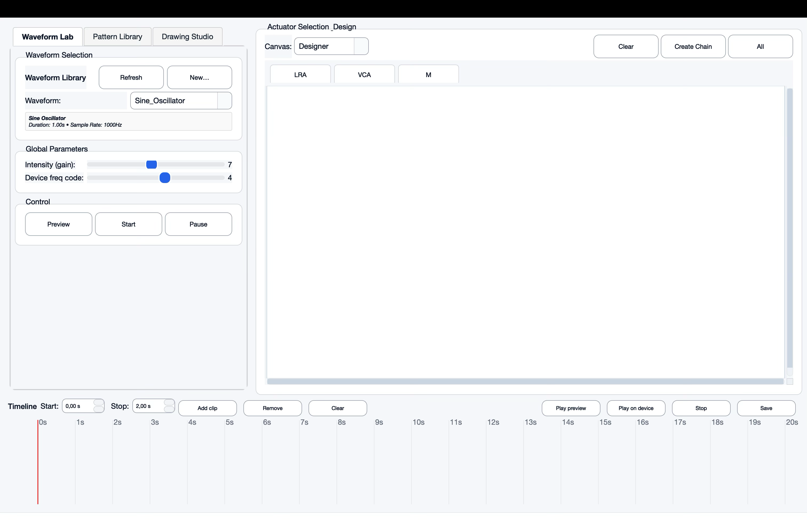
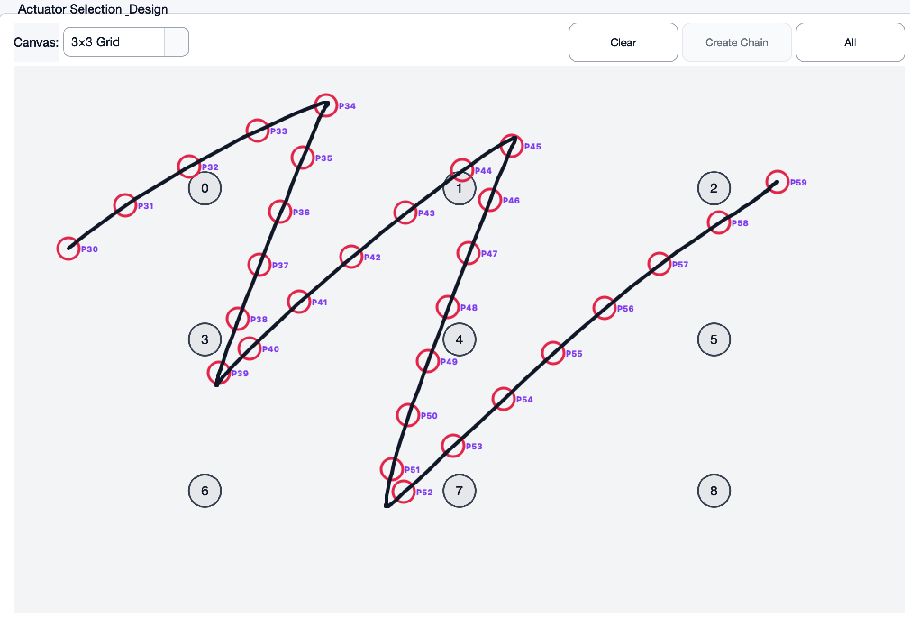
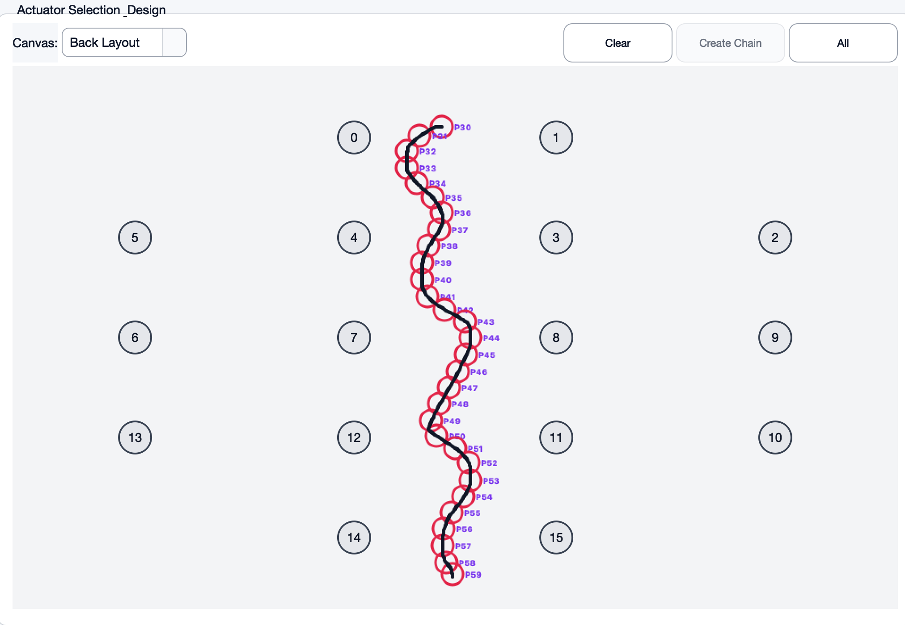
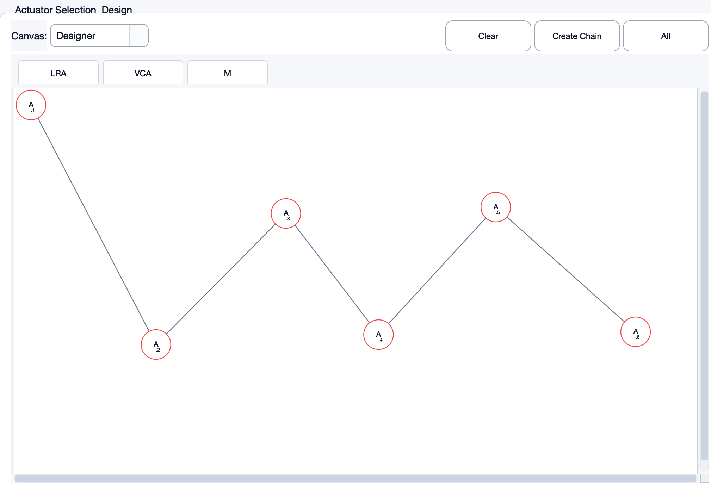
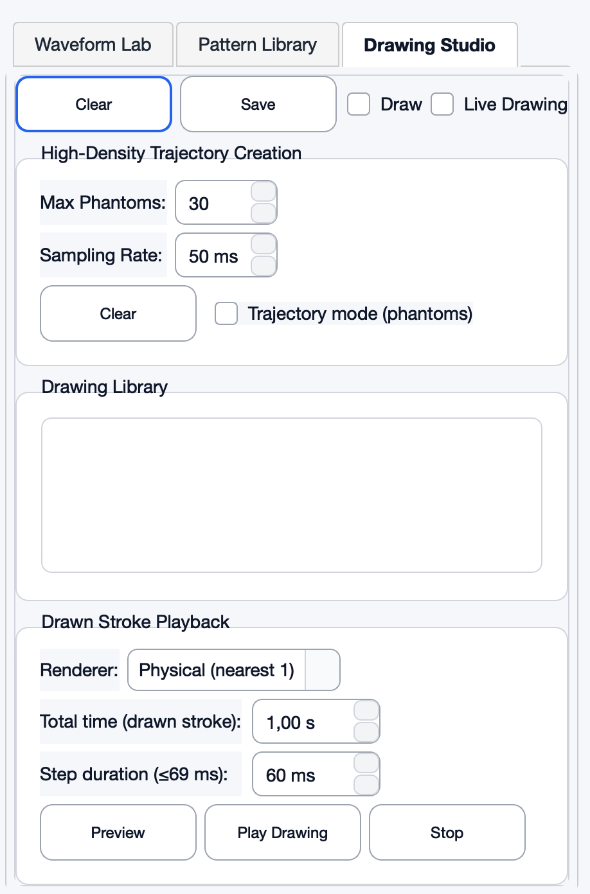
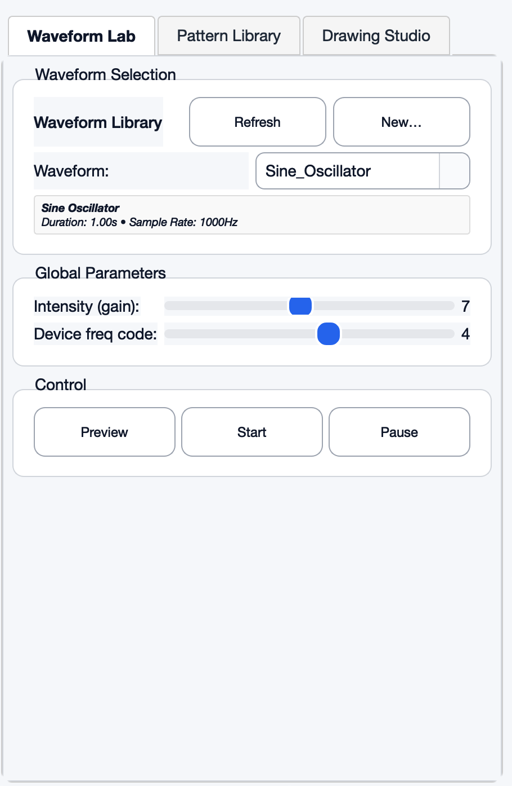
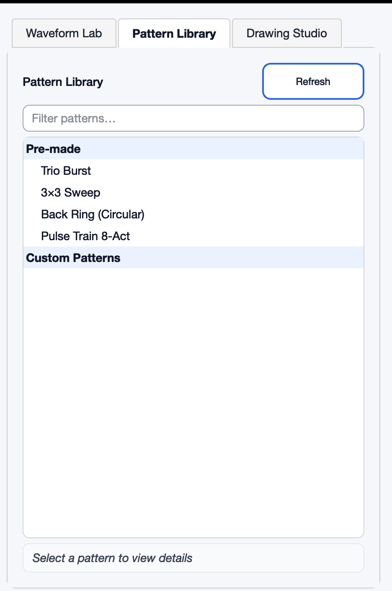

VibraForge
EPFL LIS & University of Toronto
A desktop application for designing haptic patterns with real-time hardware control. Supports Serial, BLE, and ESP-NOW protocols with A/B testing capabilities for tactile perception studies.
Interface







Overview
VibraForge is a comprehensive haptic GUI developed for BingJian Huang's VibraForge project. The application enables researchers to design, test, and deploy complex haptic patterns with real-time hardware control and phantom sensation rendering.
Authors
Darius Giannoli, Yang Chen, Gabriel Taieb
Technologies
Frontend: Python, PyQt5/PySide2, Qt Designer
Graphics: PyQtGraph, Matplotlib
Communication: Serial (PySerial), Bluetooth Low Energy (BLE), ESP-NOW
Signal Processing: NumPy, SciPy
Phantom Rendering: Custom implementation based on Park et al. 2016 algorithms
File Formats: CSV, .haptic (Meta Haptics Studio), JSON
Core Features
1. Waveform Lab
Main control hub for testing actuators and playing waveforms. Features include port scanning and device connection, waveform loading from files or the designer, global intensity and frequency controls, and preview/playback modes for testing patterns without hardware or deploying to connected devices.
2. Pattern Library
Save and replay both pre-made and custom patterns. Pre-made patterns include Trio Burst, 3×3 Sweep, Back Ring, and Pulse Train (8-actuator). Custom patterns created with the Timeline can be saved and recalled for experiments.
3. Drawing Library
Freehand drawing interface with real-time phantom rendering. Features live drawing mode for immediate device playback, high-density trajectory creation with configurable phantom density and sampling rates, and support for both phantom (3-actuator) and physical (nearest-1) rendering modes.
4. Canvas Designer
Visual editor for actuator layouts. Drag-and-drop interface for positioning actuators, support for creating actuator chains, and pre-configured layouts including 3×3 grid for testing and back layout (2-4-4-2) for wearable applications.
5. Timeline Sequencer
Precise clip-based sequencer for creating complex haptic patterns. Select waveforms for individual actuators, define start/stop times for precise temporal control, preview sequences before deployment, and save compositions to the Pattern Library.
6. Waveform Designer
Advanced waveform creation and customization tool. Features real-time device testing, frequency and amplitude visualization, ADSR envelope modifiers, CSV export functionality, and support for importing .haptic files from Meta Haptics Studio.
7. Waveform Library
Collection of built-in oscillators and custom signals. Double-click to load with default parameters or drag-and-drop to customize. Save user-created waveforms for reuse across projects.
8. Mathematical Signal Generator
Generate waveforms from mathematical equations with configurable frequency, duration, and sampling rate parameters for precise signal synthesis.
Technical Capabilities
• Phantom sensation rendering using Park et al. 2016 algorithms
• Multiple communication protocols: Serial, BLE, ESP-NOW
• A/B testing framework for tactile perception studies
• Optimized packet scheduling for low-latency actuation (≤69ms SOA)
• Real-time visual feedback and hardware synchronization
• Support for 8+ simultaneous actuators
• High-density trajectory sampling for smooth drawing playback